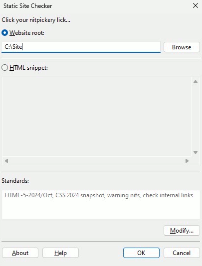

This is the dialogue that appears when you first run the GUI version of SSC.
Enter what you want SSC to analyse. Your choice is a directory containing a website, or a snippet of HTML.
To analyse a website at source, click on Website root, then Browse, and select the website’s directory. If the website has lots of directories, select the topmost.
If, on the other hand, you want to check a snippet of HTML, click on HTML snippet, and paste the snippet into the box immediately below.
When you have specified what you want SSC to analyse, click on OK.
In the Standards box, you can see the current standards and options the ssc will apply when checking. If you prefer to use alternative definitions of HTML, CSS, etc., or would like to use certain other features of SSC, click Modify....
The About, Cancel, and Help buttons behave as usual.
SSC can also be controlled with command line switches and configuration files.